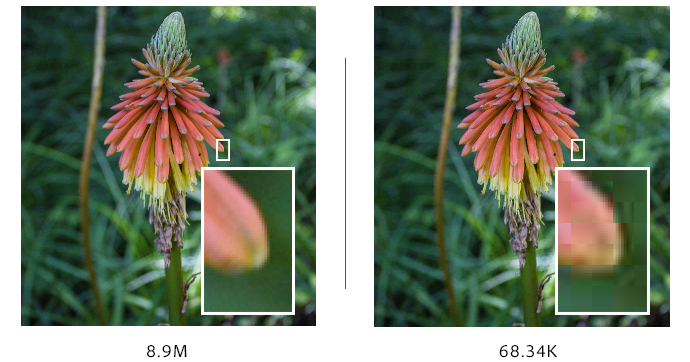

Compressie
Wat is Compressie?
Compressie zorgt ervoor dat een afbeelding kleiner wordt door bijvoorbeeld een soort kleur weg te halen die je door het mensenoog bijna niet kan zien daarom zie je eigelijk ook geen verschil tussen de foto's dan maar het kost wel minder geheugen.
Dit noem je lossy compression.
Bij losslesscompression wordt er niks weg gehaald maar juist in gekort bijvoorbeeld (24, 24, 24, 24) wordt (4,24).
Bij de uiteindelijke groote wint lossy compression wel van losslesscompression vaak.
